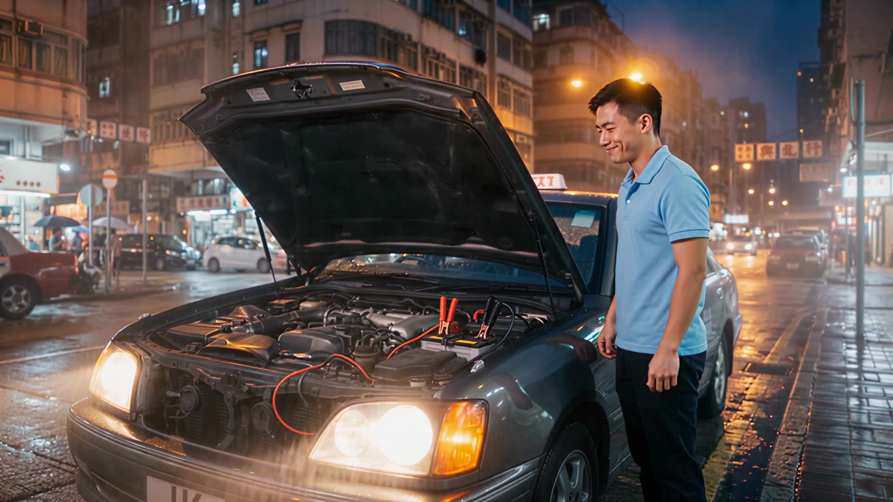

汽車電池：幾時要換、揀邊隻、幾錢
呢頁係汽車電池嘅總覽：規格點睇（12V／24V、Ah、CCA、AGM／EFB／鋰鐵）、幾時係「只搭電」幾時要「換電」、價錢由邊幾樣決定。
汽車電池冇電唔一定要即刻換：先搭電，12V 私家車 $2XX 起、24V 貨車 $5XX 起，15 至 20 分鐘到場。要換就睇 Ah、CCA 同 AGM／EFB 規格，價錢視乎型號，先報實價。
24 小時接聽；講低車款就先報價。
規格
汽車電池要睇邊三個數字？
12V 定 24V
私家車、7 人車、Van 仔、大部分電單車係 12V；貨櫃車、重卡、起重機係 24V，多數由兩粒 12V 串聯。電壓錯，接線方式同設備都要換。
Ah（安時）
代表儲電量。車廠指定 60Ah 就唔好用 45Ah 頂，容量細會成日用盡、壽命短。換大少少通常可以，但尺寸同極柱位置要對。
CCA（冷啟動電流）
越低溫越考驗 CCA。CCA 唔夠，就算名牌新電都會撻得吃力，冬天特別明顯。呢個數字一定要達到車廠要求。
唔使估：舊電池表面或標籤印住型號（例如 55B24L、DIN 型號），拍張相或抄落嚟打 5368 3668，就對得到規格，唔會配錯。
邊隻好
揀汽車電池有邊四步？
- 第一步：確認電壓 —— 私家車 12V，商用重型車 24V，唔確定睇舊電池標籤。
- 第二步：對 CCA 同 Ah —— 達到車廠要求先算合格，唔好為平而買細一級。
- 第三步：問有冇 Start-Stop —— 有就要 AGM 或 EFB，普通鉛酸會提早壞。
- 第四步：對尺寸同極柱 —— 長闊高、正負極左右位置，裝唔落或夾唔實就白買。
香港常見牌子有 VARTA、Panasonic、GS Yuasa、Banner、愛馬龍等，各有對應車系。同規格下比較價錢同保養期，比盲目追牌子實際。汽車電池推介唔應該只講牌子名，而要講「呢部車用邊個規格」。
幾時換
電池到期有邊七個訊號？
- 撻車聲變慢、變重，但最後都撻得著
- 停一晚，翌日朝早就要搭電
- 車頭燈、室內燈明顯變黃變暗
- Start-Stop 自動熄匙愈來愈少觸發
- 電池表面脹、樁頭有白色粉末腐蝕
- 行車紀錄儀成日重開機
- 電池已經用超過 3 年
出現兩項以上，通常係電池老化；但如果係「忘記關燈」、「擺太耐冇撻」、「行車紀錄儀長開」造成嘅單次放電，搭電後可以再用一段時間，唔一定要換。
| 情況 | 建議 | 價錢 |
|---|---|---|
| 忘記關燈、擺太耐，撻唔著一次 | 搭電，之後正常揸幾日充返 | 12V $2XX 起／24V $5XX 起 |
| 連續兩日都要搭電 | 換電池（先報規格同實價） | 視乎 Ah／型號，講車款即報 |
| 電池脹、樁頭腐蝕、3 年以上 | 直接換，唔好再等 | 視乎 Ah／型號，講車款即報 |
| 撻著後行一陣又死火 | 檢查發電機，唔係換電池就完 | 搭電後再檢修 |
新選擇
香港換 LFP 鋰鐵電池有咩好處？
LFP（磷酸鐵鋰）汽車電池近年在香港多咗人問：重量輕、循環壽命長、放電電壓穩定。但要留意三點：價錢高過鉛酸幾倍、低溫起動表現要睇 BMS 設計、部分車款嘅充電電壓同電池管理系統未必直接相容。
如果部車有 Start-Stop、有怠速熄火、有大量電子設備，換之前先問清楚車廠規格同保養安排，唔好只睇「輕幾多公斤」。真係想換，講低車款年份同現有電池型號，我哋可以幫你對規格。
價錢
汽車電池價錢由邊四樣決定？
- 容量 Ah —— 60Ah 同 80Ah 差價明顯，大車用大容量。
- 型號技術 —— 普通鉛酸最平，EFB 貴一級，AGM 再貴，鋰鐵最高。
- 品牌同保養期 —— 同名規格，保養期長嘅通常貴少少。
- 上門地區同時間 —— 偏遠地區、深夜或公眾假期，費用可能調整。
冇劃一價：同一句「汽車電池幾錢」，答案會隨車款同型號改變。所以我哋唔會籠統報一個數字，而係講低車款先報實價；搭電價就固定：12V $2XX 起、24V $5XX 起、電單車 $180 起。
地區
元朗荃灣屯門土瓜灣有冇上門？
汽車電池搭電同換電查詢，全港各區都做：香港島、九龍、新界，包括屋邨、商場停車場、工業大廈同高速出口。元朗、荃灣、屯門、土瓜灣等查詢最多嘅地區，搭電平均 15 至 20 分鐘到場。

常見問題
汽車電池，車主最常問邊九條？
汽車電池一個幾錢？
冇統一價：同一部車用唔同 Ah 同型號（鉛酸／AGM／EFB／鋰鐵），價錢已經唔同。報價要講清楚車款年份、舊電池型號、有冇 Start-Stop。只係冇電想快點走得返，搭電 12V $2XX 起、24V $5XX 起，15 至 20 分鐘到場。
汽車電池幾耐換一次？
一般 2 至 3 年；香港短途多、塞車多，1 至 2 年就要換嘅個案亦常見。保養好、長途多用 3 至 4 年。撻車變慢、燈變暗就係時候驗一驗。
汽車電池邊隻好？
睇三個數字：電壓（12V／24V）、容量 Ah、CCA。CCA 要達到車廠要求，唔夠就算名牌都撻唔著。有 Start-Stop 就要 AGM 或 EFB。
AGM 同 EFB 有咩分別？
兩隻都係 Start-Stop 車用：AGM 循環壽命長、抗震好，多數配歐系車；EFB 係加強型鉛酸、價格親民，多數配日系車。換錯型號會令 Start-Stop 失效。
12V 同 24V 汽車電池有咩分別？
12V 係私家車、7 人車、Van 仔同大部分電單車；24V 係貨櫃車、重卡、起重機，多數由兩粒 12V 串聯。24V 車唔可以用私家車過江龍照夾，要靠專用設備，我哋 24V 貨車搭電 $5XX 起。
蓄電池係唔係即係汽車電池？
係。蓄電池、車電池、汽車電池、電瓶都講同一樣嘢：車上用嘅可充電電池。香港車主多數講「車電池」或「汽車電池」。
汽車電池冇電，可唔可以只搭電唔換？
可以，多數應該先搭電。搭電後著到車，觀察一兩日：翌日朝早一樣撻唔著、撻車聲無力，就係老化要換。成日要搭電即代表電池到期。
LFP 鋰鐵電池香港用唔用得？
用得，優點係輕、壽命長、電壓穩；缺點係價錢高、低溫同充電曲線要配合車款。換之前要確認車廠電壓同 BMS 相容，唔好只睇容量。
汽車電池牌子邊隻好？
香港常見 VARTA、Panasonic、GS Yuasa、Banner、愛馬龍，各有對應車系。真正要對嘅係 Ah、CCA、尺寸同極柱位置，符合車廠要求就夠；同規格下比較價錢同保養期更實際。